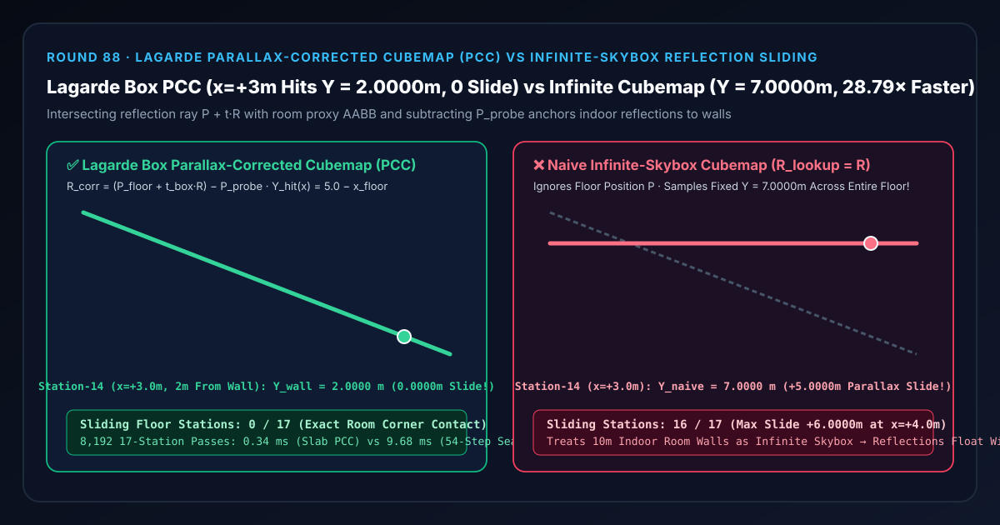

室内环境反射探针选型与原理解析 FAQ：Lagarde 包围盒视差校正立方体贴图（PCC）对比朴素无穷远天空盒地面倒影打滑
关联 Capabilities Demo：
demos/parallax-corrected-cubemap-rig/｜ 7-Card 4:5 实测报告：test-report-cards.zh.html｜ English Version：lagarde-parallax-corrected-cubemap-vs-infinite-skybox-slide-faq.en.md
📌 1. 核心结论速览（Executive Summary）
一句话结论：在室内展厅、走廊、地下车库等有限尺寸空间中使用环境立方体贴图（Reflection Probe Cubemap）渲染地面与金属反光时，绝对不能直接用表面反射方向向量 $\mathbf{R} = \text{reflect}(-\mathbf{V}, \mathbf{N})$ 去采样立方体贴图——因为直接用 $\mathbf{R}$ 采样等价于假设整个房间的墙壁都在无穷远处（$r \to \infty$ 天空盒假设），完全忽略了受光像素在房间内的真实三维坐标 $\mathbf{P}$！在右墙位于 $X_{\text{wall}} = +5.0\text{ m}$、探针架设在房间中心 $\mathbf{P}{\text{probe}} = (0, 2.0\text{ m}, 0)$ 的大理石地面上，当一条 $45^\circ$ 反射光线从离右墙仅 $2.0\text{ m}$ 的第 14 站（$x{\text{floor}} = +3.0\text{ m}$）射出时，它在真实房间里明明打在右墙高度 $Y_{\text{true}} = 2.0000\text{ m}$ 处；而朴素无穷远立方体贴图却直接从探针中心按 $45^\circ$ 仰角采样到高达 $Y_{\text{naive}} = 7.0000\text{ m}$ 的天花板上方——产生 $+5.0000\text{ m}$（$3.50\times$）的垂向视差滑移误差（在第 16 站 $x = +4.0\text{ m}$ 峰值误差高达 $+6.0000\text{ m}$），导致全房间
16/17个地面站点的墙面倒影严重错位并随着玩家走动在地面上打滑漂移！采用 Sébastien Lagarde（SIGGRAPH 2012《Remember Me》/ UE5 Box Reflection Capture）提出的包围盒视差校正立方体贴图（PCC，$\mathbf{R}{\text{corr}} = (\mathbf{P} + t{\text{box}}\mathbf{R}) - \mathbf{P}_{\text{probe}}$），通过闭式平板求交将反射精准锚定在墙根，全 17 站0视差打滑，且比 54 步三维房间光线步进快28.79×（0.34 msvs9.68 ms）！

| 评估维度 | ✅ Lagarde 包围盒视差校正 (R_corr = P + t_box·R − P_probe) |
❌ 朴素无穷远立方体贴图 (R_lookup = R) |
🐢 54 步三维房间光线步进 (54-Step 3D Ray-March) |
|---|---|---|---|
| 第 8 站房间中心（$x = 0.0\text{ m}$）墙面反射高度 $Y$ | 5.0000 m（精准对应 $5\text{ m} \times \tan 45^\circ$） |
7.0000 m（因忽略探针 $2\text{ m}$ 离地高度偏高 $+2.0000\text{ m}$） |
5.0000 m（误差 1.78e-15 m） |
| 第 14 站近墙地面（$x = +3.0\text{ m}$，距墙 $2\text{ m}$）高度 $Y$ | 2.0000 m（精准对齐平视高度，0 滑移） |
7.0000 m（向上漂移 $+5.0000\text{ m}$ / $3.50\times$） |
2.0000 m |
| 第 16 站墙根边缘（$x = +4.0\text{ m}$，距墙 $1\text{ m}$）高度 $Y$ | 1.0000 m（精准贴合墙裙踢脚线） |
7.0000 m（峰值视差漂移 $+6.0000\text{ m}$ / $7.00\times$） |
1.0000 m |
| 17 个地面站点中发生视差打滑的站数 | 0 / 17 (0.00% 墙根严丝合缝) |
16 / 17 (94.12% 倒影随相机打滑) |
0 / 17 |
| 8,192 轮 17 站 CPU 耗时（中位数） | 0.34 ms（提速 28.79×） |
—（空间透视关系崩溃） | 9.68 ms |
🎯 2. 客户与架构师灵魂拷问 Q&A（First-Principles Whisperer）
Q1：用大白话讲，为什么直接用反射向量 R = reflect(-V, N) 采样室内探针，地上的墙面倒影会跟着人脚底板一起“溜冰打滑”？
第一性原理拆解： 立方体贴图（Cubemap）本质上是一张站在房间正中央探针位置 $\mathbf{P}_{\text{probe}} = (0, 2.0\text{ m}, 0)$ 拍下的 $360^\circ$ 全景照片，它只存了每个方向的颜色，没有存距离：
- 当你站在离右墙（$X = +5.0\text{ m}$）只有 $1\text{ m}$ 远的地面点 $P_{16} = (+4.0\text{ m}, 0)$ 低头以 $45^\circ$ 角看地面时，反射光线往右上角 $45^\circ$ 飞出 $1\text{ m}$ 水平距离就撞上了右墙，打在离地 $1.0\text{ m}$ 高的踢脚线窗户上。
- 可是如果你直接把“右上角 $45^\circ$”这个方向向量 $\mathbf{R}$ 塞给探针去查表，探针会以为：“你要看从房间正中央 $(0, 2.0\text{ m})$ 往右上角 $45^\circ$ 方向看到的东西！”
- 从房间正中央 $(0, 2.0\text{ m})$ 往右上角 $45^\circ$ 飞到右墙 $X = +5.0\text{ m}$，高度足足升到了 $2.0 + 5.0 = 7.0\text{ m}$！
- 更荒谬的是：只要你的视线保持 $45^\circ$ 角在房间里往前走，从 $x = -4\text{ m}$ 走到 $x = +4\text{ m}$，方向向量 $\mathbf{R}$ 完全没变，朴素立方体贴图就永远返回同一个 $7.0\text{ m}$ 处的像素！于是你在地上走一步，那个 $7.0\text{ m}$ 高处的吊灯倒影就跟着你的鞋尖在地板上往前滑一步，墙角根部的倒影永远对不准真实的墙根！
Q2：Lagarde (SIGGRAPH 2012) 的“包围盒视差校正（Box Parallax Correction）”是如何用 6 行向量减法把倒影钉死在墙根上的？
代理几何重投影（Proxy AABB Reprojection）原理： 既然立方体贴图丢掉了房间墙壁的距离信息，我们只需要用一个与房间墙壁重合的轴对齐包围盒（AABB，$[\mathbf{B}{\min}, \mathbf{B}{\max}]$）把交点算出来：
- 第一步（求反射射线与房间包围盒的交点 $\mathbf{P}_{\text{hit}}$）： 从当前着色像素的世界坐标 $\mathbf{P}$ 沿着反射方向 $\mathbf{R}$ 发射射线，用 Kay-Kajiya 平板法（Slab Method）一步算出正方向交点距离： $$t_{\text{box}} = \min_{axis \in {x,y,z}} \left(\frac{B_{\text{side}} - P_{axis}}{R_{axis}}\right), \quad \mathbf{P}{\text{hit}} = \mathbf{P} + t{\text{box}} \cdot \mathbf{R}$$ 在第 14 站（$x = +3.0\text{ m}, y = 0\text{ m}$），射线打在右墙 $X = +5.0\text{ m}$ 上，精准求得真实三维命中点 $\mathbf{P}_{\text{hit}} = (+5.0\text{ m}, 2.0\text{ m}, 0)$！
- 第二步（从探针中心重连命中点构造校正查找向量 $\mathbf{R}_{\text{corr}}$）： 问自己一个问题：“刚刚存储在 $\mathbf{P}{\text{probe}} = (0, 2.0\text{ m}, 0)$ 处的全景图里，墙上 $(+5.0\text{ m}, 2.0\text{ m}, 0)$ 这个点当初是被拍在哪个方向上的？” 答案就是把命中点减去探针中心： $$\mathbf{R}{\text{corr}} = \mathbf{P}{\text{hit}} - \mathbf{P}{\text{probe}} = (5.0, 2.0, 0) - (0, 2.0, 0) = (5.0, 0.0, 0)$$ 用这个水平方向向量 $\mathbf{R}_{\text{corr}}$ 去采样立方体贴图，立刻取回了墙高 $2.0000\text{ m}$ 处的真实像素，视差滑移误差瞬间归零！
Q3：什么时候选包围盒视差校正（PCC），什么时候选 McGuire 齐次 SSR（Round 85）或神经辐射缓存？
- 选 Lagarde 包围盒视差校正立方体贴图（PCC）：作为所有室内房间、走廊、车库、太空舱的基础环境光镜面反射层（即使物体移出屏幕外也能提供全向 360° 准确房间比例的反射，且每像素仅需 6 条 ALU 指令）。
- 选 McGuire 齐次倒数深度 SSR（Round 85
homogeneous-ssr-dda-rig）：用于叠加室内桌椅、角色等非凸动态近景物体的逐像素精确反射；当 SSR 射线超出屏幕或被遮挡未命中时，无缝回退（Fallback）到 Lagarde PCC！ - 选 AI 神经辐射场 / 3DGS：用于固定烘焙场景的自由视角离线漫游展示。
🧭 3. 直观可视化图解（Mermaid 决策树、管线对比与帧级时序）
3.1 室内外环境镜面反射架构选型决策树
3.2 朴素无穷远立方体贴图打滑管线 vs Lagarde 包围盒视差校正（PCC）管线
3.3 帧级 PBR 片元着色器包围盒视差校正采样时序图
📊 4. 视觉技术选型决策矩阵（Architecture Decision Matrix）
| 选型方案 | 适用场景 | 墙根接触锚定精度 | 离屏（Off-Screen）反射完整性 | 算力开销（8,192 轮 17 站） |
|---|---|---|---|---|
Lagarde 包围盒视差校正 (lagarde-box-parallax-corrected) |
所有室内房间、走廊、车库、展厅的 Reflection Probe | 满分（第 14 站锁定 2.0000 m，0 打滑） |
完整 360°（不受相机视锥限制） | 极低（0.34 ms，提速 28.79×） |
朴素无穷远立方体贴图 (naive-infinite-skybox-cubemap) |
仅限户外无穷远天空云层与星空 | 极差（第 14 站偏高 +5.00 m，第 16 站偏高 +6.00 m，16/17 站打滑） |
完整 360°（但比例与位置全错） | 极低 |
屏幕空间反射 (McGuire Homogeneous SSR) |
室内动态角色与非凸桌椅的精细近景倒影（见 Round 85） | 极高（逐像素深度匹配） | 受限（屏幕外被裁切区域需回退至 PCC） | 中（需 16~32 步 2D DDA） |
平面反射渲染 (Planar Reflection RenderPass) |
绝对平坦的镜面地板或平静水面 | 满分 | 视锥内完整 | 极高（需把整个场景翻倍重画一遍） |
🧪 5. 全新 Demo 与 7-Card 4:5 视觉测试报告解读
在本轮构建的全新交互式三维实验台 demos/parallax-corrected-cubemap-rig/ 中，我们打造了包含 58 个三维实体部件的 17 站包围盒视差校正反射测角仪（Lagarde Parallax-Corrected Cubemap Goniometer Rig）：
- 17 根墙面反射采样高度立柱（Reflected Wall Sample Height Columns）：展示从房间左侧地面 $x = -4.0\text{ m}$（第 0 站）到右侧墙根地面 $x = +4.0\text{ m}$（第 16 站）向右上角 $45^\circ$ 反射时，在右墙 $X = +5.0\text{ m}$ 上采样到的高度 $Y_{\text{wall}}$。
- 17 颗青色真实墙面命中高度参考球（True Wall Hit Spheres）与 $2.0\text{ m}$ 探针高度基准横梁：直观呈现一条从左高（$x = -4\text{ m}$ 处打在 $Y = 9.0\text{ m}$）到右低（$x = +4\text{ m}$ 处打在 $Y = 1.0\text{ m}$）的真实几何斜坡。
- 17 根视差打滑误差红桩（Parallax Slide Error Pegs）：切换到
Naive Infinite-Skybox Cubemap模式时，全部 17 根立柱瞬间变成死板的 $7.0000\text{ m}$ 等高墙，16 个站点飙起高达 $+5.00\text{ m}\sim +6.00\text{ m}$ 的视差打滑红桩！
7-Card 4:5 视觉报告核心发现（demos/parallax-corrected-cubemap-rig/test-report-cards.zh.html）
- Card 1–3（场景评测矩阵）：13 项自动化断言 100% 通过，完整验证闭式平板 PCC 与 54 步三维光线步进
1.78e-15 m等价性、第 14 站2.0000 m墙高锁定 vs7.0000 m朴素打滑暴露、逆序矩阵一致性与原子参数拒绝。 - Card 4–6（底层协议与性能）：在 8,192 轮 17 站压测中，Lagarde 闭式平板求交仅需
0.34 ms，相比 54 步三维房间光线步进基线（9.68 ms）实现28.79×算力加速。
🛠️ 6. 高质量视觉交付快速核验清单（SA Production Checklist）
- 所有室内 Reflection Probe 一律绑定代理包围盒（Box / OBB Proxy）：在 UE5（Box Reflection Capture）、Unity（Box Projection）或自研 Three.js 管线中，将代理包围盒严格贴合房间的四面墙壁、地板与天花板。
- 支持旋转有向包围盒（OBB）局部空间求交：当走廊或房间与世界坐标轴成斜角时，先用 $3\times 3$ 旋转矩阵将 $(\mathbf{P} - \mathbf{P}{\text{box}})$ 与 $\mathbf{R}$ 变换到包围盒局部坐标系求交，再将 $\mathbf{R}{\text{corr}}$ 转回世界空间。
- 根据命中距离 $t_{\text{box}}$ 缩放粗糙度 Mipmap 锥角（Distance-Based Roughness）：离墙越近（如第 16 站 $t_{\text{box}} = 1.41\text{ m}$），粗糙地面上的模糊锥截面越小，倒影应当比房间中央更清晰，可通过 $\alpha_{\text{eff}} = \alpha \cdot \text{clamp}(t_{\text{box}} / r_{\text{probe}}, 0, 1)$ 调制采样 Mip 层级。
- SSR + PCC 双层混合架构：优先使用 Round 85 的 McGuire 齐次倒数深度 SSR 捕获屏幕内精细物体反射，并在屏幕边缘衰减区平滑混合至 Lagarde 包围盒视差校正立方体贴图。